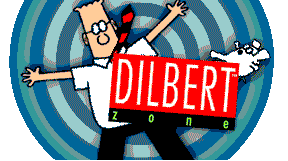

Dilbert's Laws of Work
- A pat on the back is only a few centimeters from a kick in the butt.
- Don't be irreplaceable, if you can't be replaced, you can't be promoted.
- The more crap you put up with, the more crap you are going to get.
- You can go anywhere you want if you look serious and carry a clipboard.
- Eat one live toad the first thing in the morning and nothing worse will
happen to you the rest of the day.
- When the bosses talk about improving productivity, they are never talking
about themselves.
- If at first you don't succeed, try again. Then quit. No use being a damn
fool about it.
- Everything can be filed under "miscellaneous."
- Never delay the ending of a meeting or the beginning of a cocktail hour.
- To err is human, to forgive is not our policy.
- Anyone can do any amount of work provided it isn't the work he/she is
supposed to be doing.
- If you are good, you will be assigned all the work. If you are really
good, you will get out of it.
- You are always doing something marginal when the boss drops by your desk.
- People who go to conferences are the ones who shouldn't.
- If it wasn't for the last minute, nothing would get done.
- When you don't know what to do, walk fast and look worried.
- When confronted by a difficult problem you can solve it more easily by
reducing it to the question, "How would the Lone Ranger handle this?"
- No matter how much you do, you never do enough.